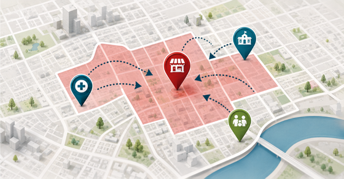

A closer look at creative work across professional services, manufacturing, and baseball.
Photography & Community Moments
A closer look at the people and experiences behind the campaigns, from community appearances to in-ballpark storytelling. These images show how photography and visual documentation supported my broader marketing work.
Dog Days at the BallparkA community-focused moment with a player and four-legged visitor, showing how Otters events brought fans together beyond the game itself.
More original event and behind-the-scenes photography can be added here as those images become available.
Family & Lifestyle Photography
When I’m not creating content for brands, there’s a pretty good chance I’m still behind a camera. From family celebrations to impromptu photoshoots with my nephew, photography is one of my favorite ways to get creative outside of work.
The Birthday CrewBecause apparently I can’t attend a family gathering without bringing my camera.Birthday CelebrationsGood company, a little chaos, and plenty of reasons to pull out the camera.
Branding Beyond the ScreenA Pacific Press brand application created for industrial equipment, extending the visual identity into the physical product experience.
Product Marketing CollateralA brochure from Pacific Press's updated marketing materials, designed to present technical products in a consistent brand system.Announcing Firm LeadershipA branded announcement for a new Kemper partner, balancing a professional presentation with clear, timely communication.Accounting & Bookkeeping ServicesAn informational service graphic that organizes detailed accounting offerings into a more approachable visual layout.
Product Brochure SeriesA further example from the coordinated print collateral developed around the Pacific Press brand refresh.Kemper Connect Web PresentationA website mockup illustrating how Kemper's professional brand translates into a digital experience.Payroll Services GraphicService-focused marketing creative presenting Kemper's payroll offering in an organized visual format.
Social content
Organic social media creative across sports and professional services.
Promoting the Game-Day CalendarA packed schedule of themed nights and promotions translated into a shareable graphic for baseball fans.Margaritaville Theme NightTropical-themed promotional creative introducing a special night at Bosse Field and building excitement ahead of the game.Otters Promotional ContentAn example of the visual approach used to communicate baseball promotions to fans across social channels.More from the Otters CampaignsA second look at the team's promotional social content and its playful, fan-focused brand voice.Professional Services ContentA branded content graphic supporting Kemper's educational marketing and client communications.Answering Client QuestionsAn educational graphic built around a common tax-related question, making a technical topic more approachable.
A Season of Fan PromotionsA collection of promotional materials supporting theme nights, giveaways and the Otters' in-ballpark experience.Team Merchandise ExperienceAn e-commerce presentation connected to the Otters' fan merchandise and retail experience.Otters Promotional MaterialsAnother visual example from the team's marketing and promotional work.


Social content
Organic social media creative across sports and professional services.
